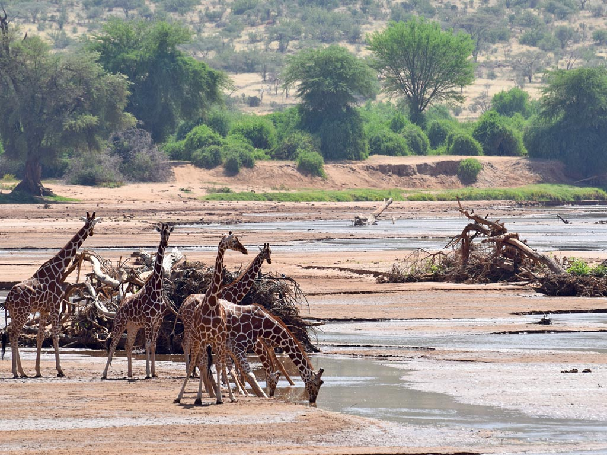
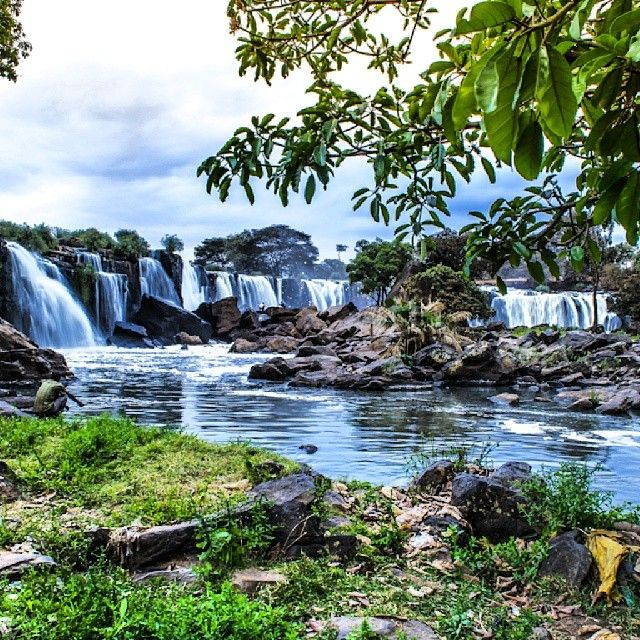
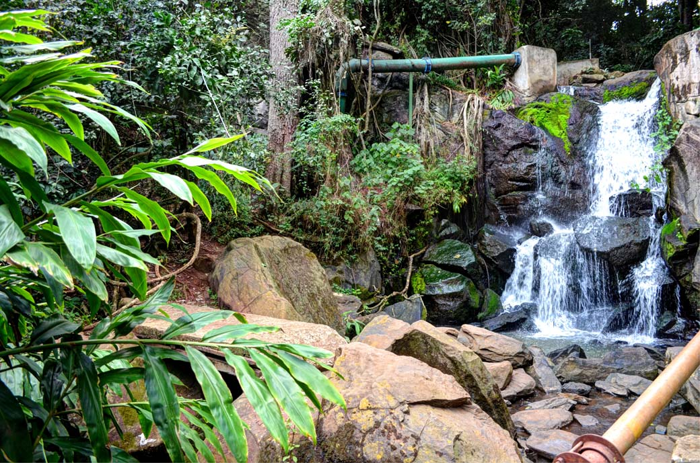
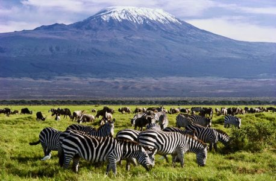

Mount Kenya
Mount Kenya is located in the former Eastern and Central provinces of Kenya.

Maasai Mara
The Mara is a large national game reserve in Narok, Kenya.

Lake Naivasha
Lake Naivasha, lake, in the eastern arm of the East African Rift System, 35 mi (56 km) southeast of Nakuru, Kenya. It is flanked by the Ilkinopop (Kinangop) Plateau (east) and the Mau Escarpment (west).

Nairobi National Park
Nairobi National Park is a national park in Kenya that was established in 1946 about 7 km south of Nairobi.

Samburu Buffalo Springs and Shaba National Reserves
Buffalo Springs National Reserve is a protected area in the Isiolo County in northern Kenya.
Hell's Gate
Hell's Gate National Park lies south of Lake Naivasha in Kenya, north west of Nairobi.

Fourteen Falls
Fourteen Falls is located in Mary Dale Farm Thika
Oloolua Nature Trail
Oloolua is located in Karen Road, Nairobi.
Amboseli National Park
Amboseli National Park is in southern Kenya.
David Sheldrick Wildlife Trust
The Sheldrick Wildlife Trust is based in Nairobi, Kenya, with a field headquarters bordering Tsavo East National Park.